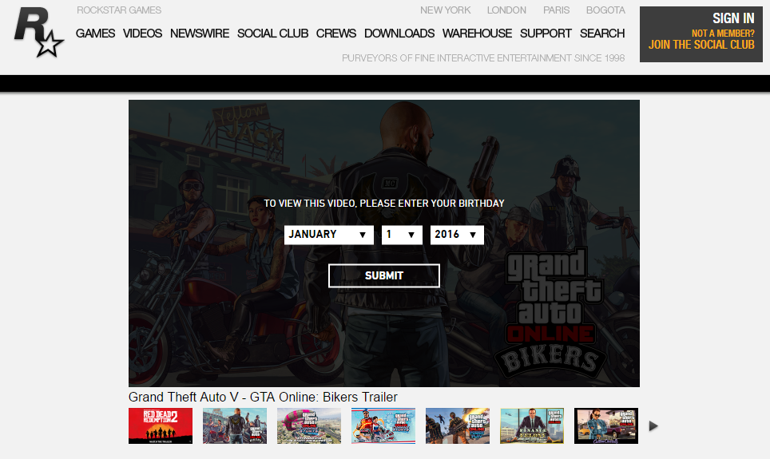
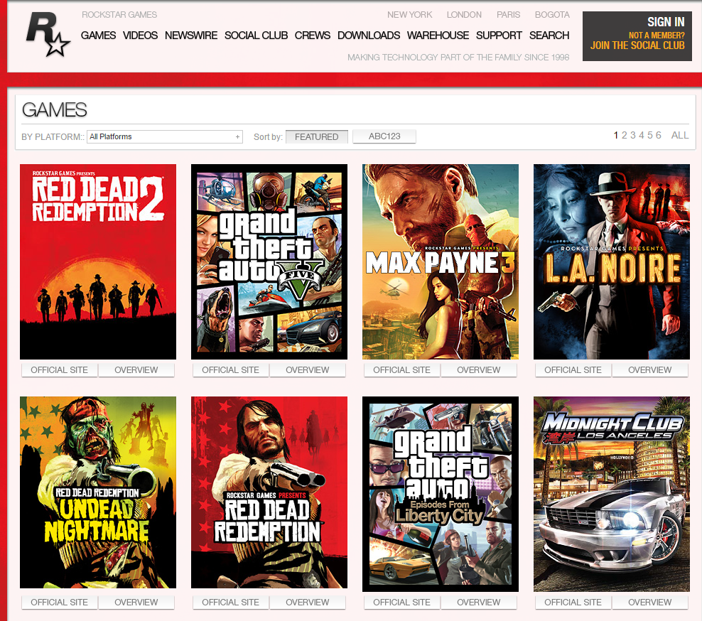

Multimedia
Multimedia realised in interesting way. First of all, on the top part of home page, placed big video player, whcih play video trailers of newest games. Under the palyer, other trailers previews are placed. It is interesting way to advertize new games, updates and DLS which is often comming. This video player is really eyescatching and placed at position which frequently visit by user, because home page loaded first.
The element created by JavaScript framework "JQuery", which was paled into div container and setted up by external CSS file. The video files converted to so light video format. Thanks to that, the web-site loaded very fast and the vido start play after five seconds. The video player was taken from youtube, and it is good approach, because many visitors know how to use this player. The page has nearly 20 video trailers and it did not effect on page load time. Before playing any video trailers, The warning message with combo boxes and submit button comming. This message just asked visitors ages, because some video trailres include censored and adult content. This message also realised by JavaScript framework JQuery. At the bottom part of this page placed only pictures in .PNG and JPG format. These pictures has size approximately 300X200 pixels and works like previews. They have links, and if visitor will click on it, it will redirect this page tab to original picture or to web-site were the visitor can find it. Some of them linked to events in some game. For example, One preview picture was about the popular rockstargames game "Grand Theft Auto V" and when I open that picture, current tab with home page was redirected to Newswire page, where was news about new event in multiplayer of this games. I think, it is the best way to advertise and promote rockstargames products.
Absolutely the same situation in Video page. At the top part of page, placed video player and under it video trailers are placed. Main difference with home page is that, after the video player part, only video are placed. It is also good way to advertise games, updates and DLS and this page will be useful for visitors who prefer watch traliers than read news or other ways.The zoomed of game picture looks like in this image:
The different method was used in game page. The body part of game page includes only pictures in .JPG and .PNG format and size similiar to video and home page. Aproximatelly 300X200 pixels. Each image presents different game which was made by the rockstargames studious. When I am writing report, there were eight games preview pictures in page and gape page have also six copies which also include game pictures. It is did not cause on page and website load time. With apropreate internet connection, the loading time is between 5 to 10 seconds(I used ADSL connection and it was enough for comfortable browsing on this web-site. The web-site developers used JavaScript framework JQuery for this preview pictures and external CSS file for set up these images. If the visitor found interesting game or DLS for game, He can click on interesting picture and than, JQuery script wil run, and it will open new window in the same tab. The window also have picture, link on latest news, brief information. ratings and etc. It is intersting way to present game information to visitors. On the other hand, it makes game page lighter, by hiding details information. It is a good approach, because not all gamers prefer all rockstargames games and detailed information for all games wii significantly increase load time of page.  The website developers found an intersting way to hide detailed infromation by adding intersting multimedia elements, which make view of game pages better. The zoomed game preview picture or game present message looks like the picture in right image. In other pages, pictures are used in .PNG and JPG format in size between 300X200 and 600X450 pixels. All other pages used for multimedia only JavaScript, and set it up by CSS externals files. I found only one web page whcih use some flash elements. This page is hidden and called just "IV" and to find this page, I clicked on preview picture of old rockstargames game in home page. This is old game, maybe this is reason why developers leave this game page with flash elements. However this game has it's own web-site. The rockstargames web-site do not use any advertise banners of other products or companies in the right and left parts of web-site as most of web-sites in novadayes. So the web-site used lots of multimedia elements on whole pages. But their size not critical for loadtime and they a looks like good quality multimedia elements. Their quantity and position do not effect on reading website content and some time they highlight some important information. I think, it will be best way to use left and right space of website. It is are really huge free space, which do not often use by background pictures. This place can include other banners to games and DLS, which will help to reorganize some pages. For example: do not make lots copies of game and video pages, because some of games or trailers preview can be placed on left and right part of web-site, which do not used and stay free.
The website developers found an intersting way to hide detailed infromation by adding intersting multimedia elements, which make view of game pages better. The zoomed game preview picture or game present message looks like the picture in right image. In other pages, pictures are used in .PNG and JPG format in size between 300X200 and 600X450 pixels. All other pages used for multimedia only JavaScript, and set it up by CSS externals files. I found only one web page whcih use some flash elements. This page is hidden and called just "IV" and to find this page, I clicked on preview picture of old rockstargames game in home page. This is old game, maybe this is reason why developers leave this game page with flash elements. However this game has it's own web-site. The rockstargames web-site do not use any advertise banners of other products or companies in the right and left parts of web-site as most of web-sites in novadayes. So the web-site used lots of multimedia elements on whole pages. But their size not critical for loadtime and they a looks like good quality multimedia elements. Their quantity and position do not effect on reading website content and some time they highlight some important information. I think, it will be best way to use left and right space of website. It is are really huge free space, which do not often use by background pictures. This place can include other banners to games and DLS, which will help to reorganize some pages. For example: do not make lots copies of game and video pages, because some of games or trailers preview can be placed on left and right part of web-site, which do not used and stay free.